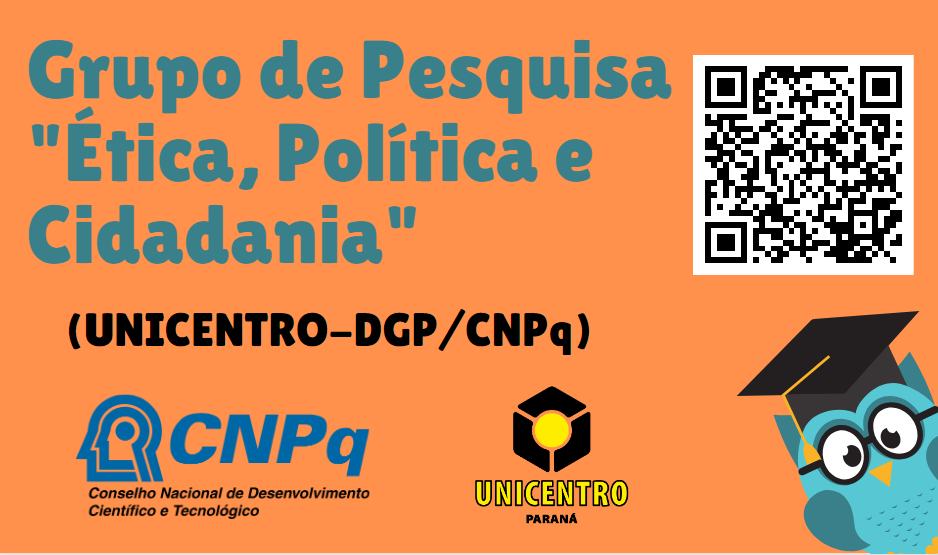

Grupo de Pesquisa "Ética, Política e Cidadania" (UNICENTRO-DGP/CNPq)

Grupo de Pesquisa "Ética, Política e Cidadania" (UNICENTRO-DGP/CNPq)
"DEFINIR TEXTO"
Assistir no Youtube
Grupo de Pesquisa "Ética, Política e Cidadania" (UNICENTRO-DGP/CNPq) - Mesa 2
Palestrantes:
Iago Gazola
Grabriel Frizzarin
Assistir no Youtube
Grupo de Pesquisa "Ética, Política e Cidadania" (UNICENTRO-DGP/CNPq) - MESA 3
Palestrantes:
Luiz Felipe Lauer
Orlando Linhares
Assistir no Youtube
Grupo de Pesquisa "Ética, Política e Cidadania" (UNICENTRO-DGP/CNPq) - MESA 4
Palestrantes:
Mayumi Resende
Barbara Smolniakof
Assistir no Youtube
Grupo de Pesquisa "Ética, Política e Cidadania" (UNICENTRO-DGP/CNPq) - MESA 5
Palestrantes:
Diego Azizi
Lúcio Prado
Assistir no Youtube
Grupo de Pesquisa "Ética, Política e Cidadania" (UNICENTRO-DGP/CNPq) - MESA 6
Palestrantes:
Larissa Baio
Oséias Rodrigues
Assistir no Youtube
Grupo de Pesquisa "Ética, Política e Cidadania" (UNICENTRO-DGP/CNPq) - MESA 7
Palestrantes:
Evandro Brito
Celso Braida
Assistir no Youtube